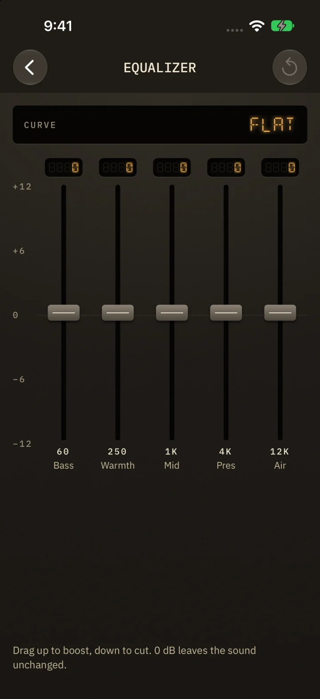
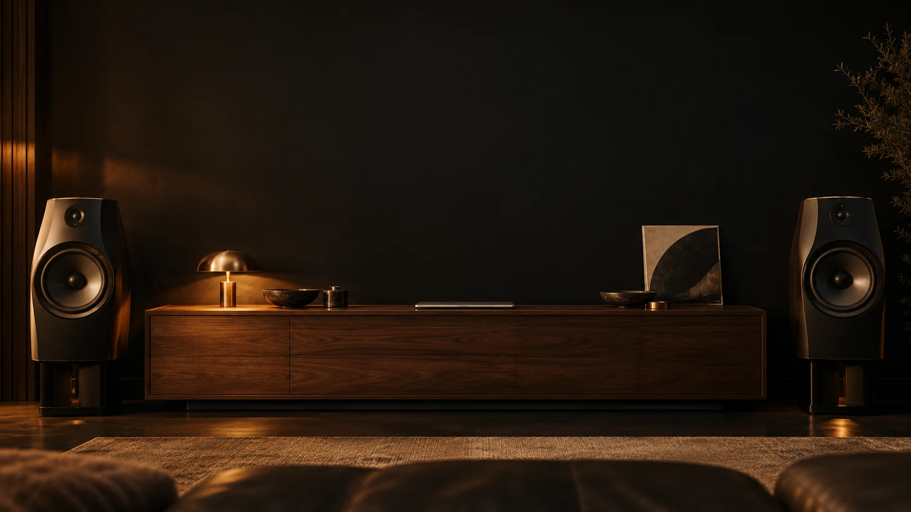
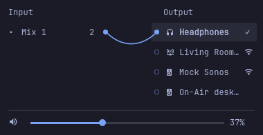
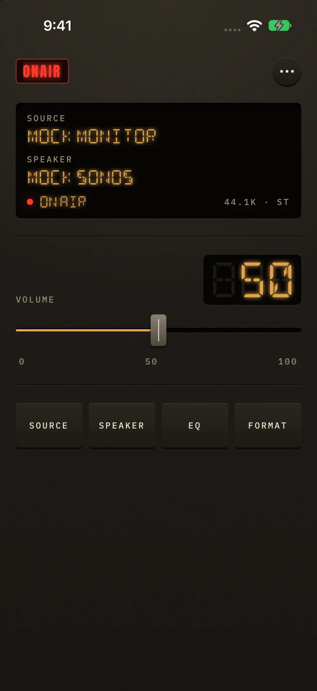
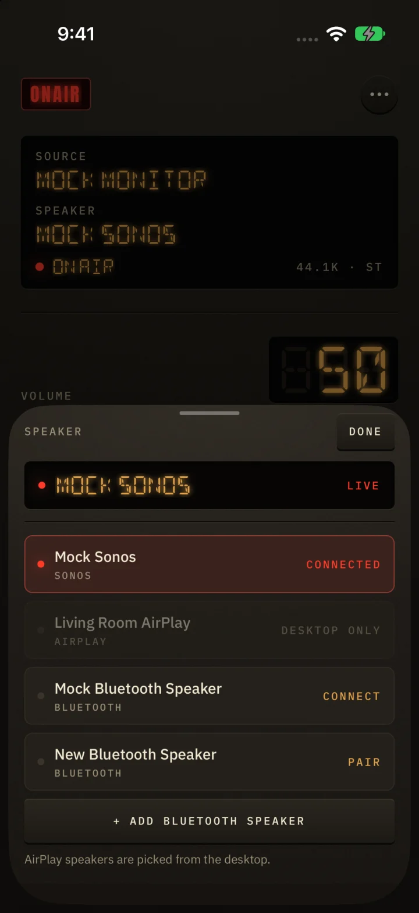

Dial it in.
Five bands. One sweet spot.


Stream your computer to your favorite speakers.
Keep the mix in your hands.
Your computer does the streaming.
You choose how it sounds.
Five bands. One sweet spot.

Sonos. AirPlay. Bluetooth.

Pick a source. Choose a speaker.
Make yourself comfortable.
iPhone + iPad. Desktop companion required.
iOS release in preparation.


No account. No on-air cloud.
Pair over your local network.
Open source. Yours to explore.
No paid tier. No subscription.
Build from source on Omarchy or Arch.
git clone https://github.com/tsonubin/on-air.git
cd on-air
packaging/omarchy/install.shRequires Rust and base-devel.
Sonos and Bluetooth. AirPlay selected on the Mac.
Sonos supported. Bluetooth detection has limitations.
Current source may be ahead of published installers. See the install guide for availability.